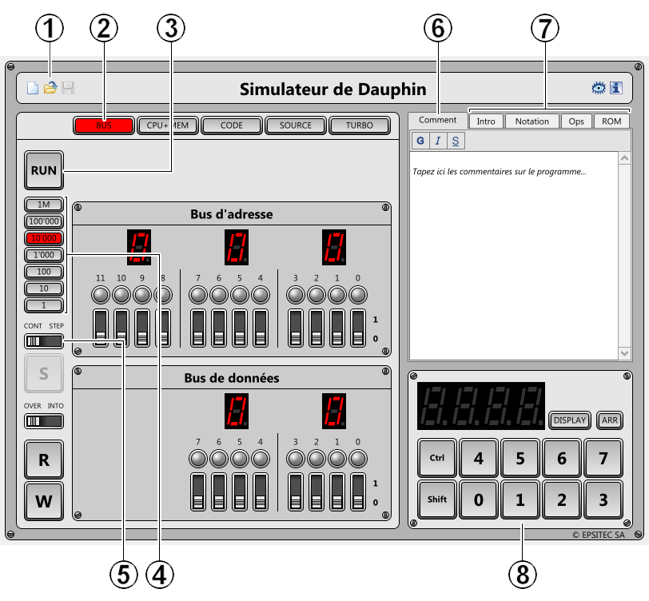
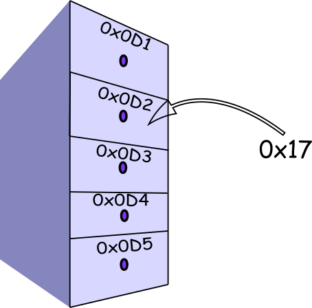
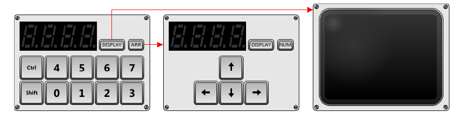
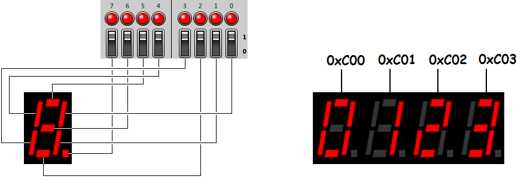
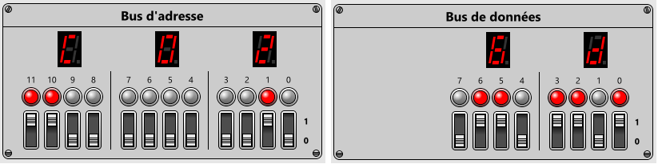
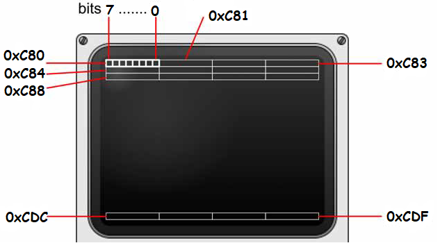
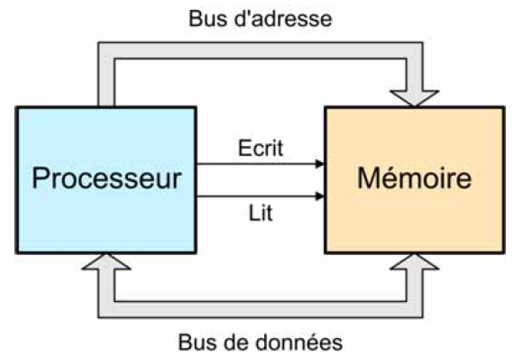
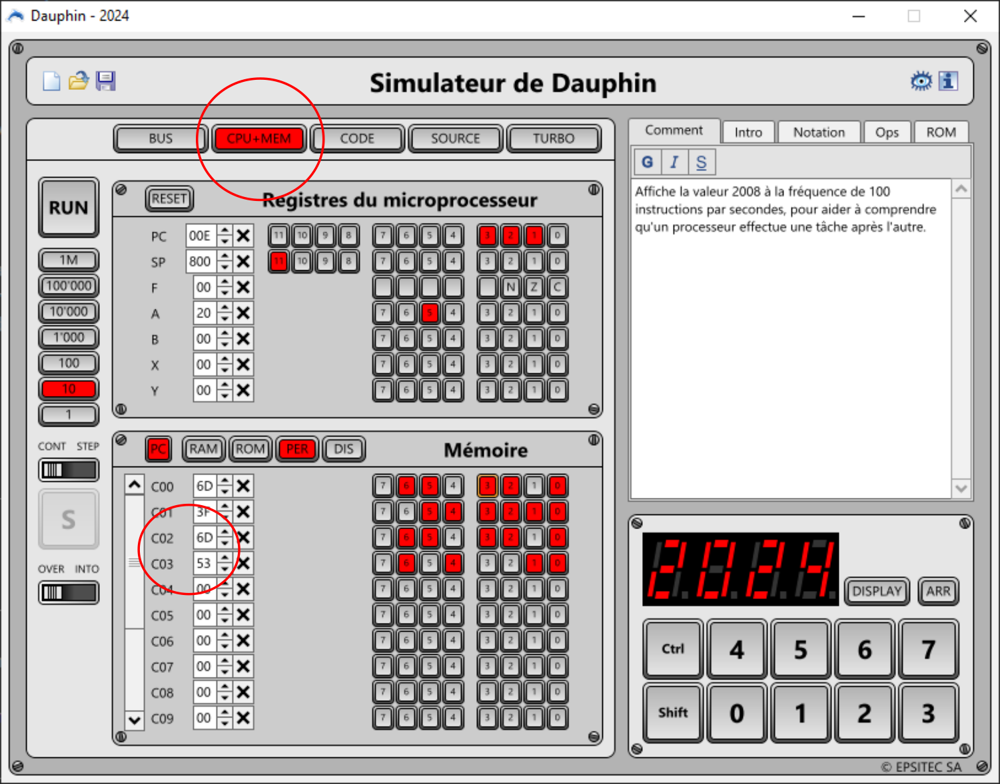
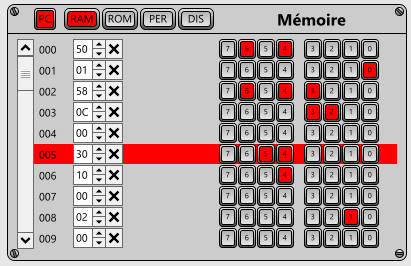
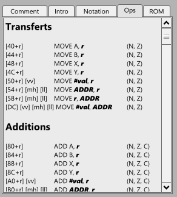

Introduction¶
Au début de l'informatique, les ordinateurs étaient de gros calculateurs composés de fils, de boutons, de tubes à vide et d'un tas de mécanismes bizarres...
En 1971, Intel conçoit le premier microprosseur, le 4004 puis le 8008, qui va révolutionner l'architecture des ordinateurs. Cette miniaturisation va permettre:
- d'augmenter les vitesse de fonctionnement;
- de réduire les coûts et diminuer la consommation
- de créer des ordinateurs plus petits
Pour comprendre comment fonctionnent ces architectures, nous allons utiliser le simulateur Dauphin développé en 1977 par le professeur Jean Daniel Nicoud. Il permet de simuler le fonctionnement rudimentaire d'un ordinateur démuni de logiciels et même de système d'exploitation.
Le Dauphin¶

À l'ouverture du dauphin, vous observerez ceci:
- Icônes classiques
- Choix des panneaux
- Démarrer ou stopper le processeur
- Choix de la vitesse (horloge)
- Choix du mode
- Commentaires éventuels
- Résumé des instructions
- Clavier et écrans
Les bus¶
Vous remarquerez très vite les deux panneaux centraux du simulateur qui contiennent les bus d'adresses et les bus de données.
Les bus
- Les bus d'adresses servent à déterminer l'adresse des mémoires où nous allons écrire ou lire des données
- Les bus de données servent à écrire une information à l'adresse indiquée par le ... bus d'adresses!
Les données sont des valeurs données sous un format hexadécimal. Un manipulation pour comprendre...
Nombre hexadécimal
Pour désigner qu'un nombre est hexadécimal on le préfixe des caractères 0x.
Ainsi le nombre 0x2F est-il hexadécimal et vaut 47 en décimal et 00101111 en binaire (sur un octet).
Écrire une donnée
- Dans le bus d'adresse, sélectionner l'adresse
0x0D2(aide: en binaire c'est0000 1101 0010). - Dans le bus de données, sélectionner l'adresse
0x17(aide: en binaire c'est0001 0111). - Appuyer sur le bouton
W(write) pour écrire la donnée0x17à l'adresse0x0D2.
 La mémoire des ordinateurs peut être considérée comme une grande commode contenant une quantité énorme de tiroirs. Pour accéder à ces tiroirs, on utilise son adresse donnée sous forme hexadécimale. Et dans ces tiroirs, on stocke une information, une donnée sous la forme d'un nombre hexadécimal.
Exercice
Le bus d'adresse contient 12 bits et le bus de données 8. Combien de bus d'adresses possède le simulateur dauphin?
On verra que les bus d'adresses permettent d'accéder à des endroits particuliers comme la mémoire, mais aussi les périphériques(écran par exemple..)
La mémoire du dauphin
Les adresses mémoires du dauphin vont de 0x000 à 0x7FF(0111 1111 1111 en binaire).
Lire ou écrire¶
Vous avez bien compris?
Écrire la donnée 0x25 à l'adresse 0x0D3
Comprenez bien que vous érivez une donnée dans un tiroir spécifique. Si vous souhaitez lire une valeur, il faut sélectionner le bus d'adresse et appuyer sur la touche R(comme Read...).
Lire une valeur
Lisez la valeur au bus d'adresse 0x0D2.
Communiquer avec les périphériques¶
Pour communiquer avec le processeur, on a besoin de:
- périphériques d'entrées pour lui donner des informations: le clavier en est un bon exemple.
- périphériques de sorties pour qu'il nous donne des informations: l'écran est l'exemple parfait.
Cette liste n'est pas exhaustive mais suffisante pour communiquer avec la machine... Le dauphin dispose de trois périphériques rudimentaires:
- un clavier ou des flèches directionnelles
- deux écrans de sorties (écran à segments ou bitmap)

Pour accéder aux périphériques, il faut connaître leurs adresses. Le tableau suivant donne déjà les premières informations:
| Adresses | Désignation |
|---|---|
0x000 à 0x7FF |
Mémoire vive |
0x800 à 0xBFF |
Mémoire Morte |
0xC00 à 0xC0F |
Périphériques |
0xC80 à 0xCDF |
Ecran Display |
L'écran aux 7 segments.¶
L'écran contient quatre afficheurs identiques auxquels on peut accéder par les adresses hexadécimales 0xC00, 0xC01, 0xC02, 0xC03:

Chaque bit de données permet l'allumage ou non d'un segment. Ainsi si vous voulez écrire le nombre 2 sur le troisième afficheur, il faut:
- Sélectionner le bon bus d'adresse :
0xC02. - Mettre à 1 les bits de rang
0,2,3,5,6. - Ne pas oublier d'appuyer sur le bouton
Wpour écrire les valeurs!

Exercice
Ecrire l'année en cours dans l'écran à segments
L'écran Bitmap¶
Pour afficher dans l'écran Bitmap, le principe reste le même: il faut allumer le bon pixel! Pour cela il faut connaître leur adresse.
L'écran Bitmap
Les adresses 0xC80 à 0xCDF permettent d'accéder aux 32x24=768 pixels de l'écran.

Exercice
Allumer les deux lignes du haut et du bas de l'écran Bitmap
Le clavier du dauphin¶
Pour communiquer avec le clavier numérique du dauphin, il faut lire à l'adresse 0xC07.
Comprendre!
Cela n'a aucun sens de d'écrire à cette adresse car il s'agit d'un périphérique d'entrée!
Utiliser le clavier du dauphin
- Saisissez le bus d'adresse
0xC07. - Appuyez sur le 6 du CLAVIER DU DAUPHIN.
- Appuyer deux fois sur le bouton
Rpour lire la valeur (deux fois car dauphin utilise une mémoire tampon pour sauvegarder la touche enfoncée).
Le processeur¶
Tournez en rond!¶
Le processeur est l'Unité Arithmétique et Logique( UAL) de l'ordinateur: il lit les données de la mémoire et les tranforme! Pourquoi? Comment? C'est ce que nous allons voir dans cette section...
Le processeur
Le processeur lit et écrit en mémoire mais personne (sauf vous) n'est capable d'observer ce comportement...

L'exercice suivant montre comment fonctionne le processeur.
Faire tourner le processeur!
- Choisir un nouveau programme.
- Choisir le mode
CONT(continue) - Choisir la fréquence
10(10 instructions par seconde...) - Appuyer sur
RUN.
Que fait le processeur?
Il balaie tous les bus adresses pour y lire les données. Or toutes les données sont à 0x00, instruction qui veut dire Ne rien faire...(NOP).
C'est le principe général: il lit une instruction en mémoire, l'exécute avant de passer à l'instruction suivante, à l'infini...
Un vrai programme!
- À l'aide de l'icône Ouvrir en haut à gauche, ouvrez le fichier
2008.dolphin. - Appuyez sur le bouton
RUN. - Recommencez en ralentissant le programme.
- Que doit-on faire pour modifier la date affichée?
C'est simple, non ! Pour afficher les chiffres de la date, le processeur lit les adresses de 0xC00 à 0xC03: il suffit d'y écrire les bonnes valeurs!

Registre et mémoire.¶
Restons dans la configuration CPU +MEM pour observer les registres du processeur et la mémoire. Mais c'est quoi un registre? Demandons à wikipédia...
un registre selon Wikipédia
Un registre est un emplacement de mémoire interne à un processeur. Les registres se situent au sommet de la hiérarchie mémoire : il s'agit de la mémoire la plus rapide d'un ordinateur, mais dont le coût de fabrication est le plus élevé, car la place dans un microprocesseur est limitée.
Les registres du dauphin
Il y a 7 registres. Chaque registre a une tâche bien précise. Par exemple, le premier registre PC(program counter) déterminer l'adresse en mémoire de la prochaine instruction à lire: on l'appelle pointeur d'instruction.
Chaque instruction, même élémentaire, est codée sur un, deux voire trois octets. C'est le jeu d 'instruction du processeur qui indique comment les instructions sont codées...
Une instruction importante: le saut!¶
Si le processeur trouve l'instruction 0x10 alors il s'agit d'une instruction de saut, saut jusqu'à l'adresse donnée juste après... Par exemple, l'instruction 0x10 0x03 0xA0 signifie << saute à l'adresse 0x03A0>>.
Nous allons coder ce petit programme...
Comprendre le saut!
- Ouvrez un noveau programme.
- Dans le panneau mémoire, tapez la valeur
10à l'adresse0x002. - Puis tapez respectivement
03etA0aux adresses0x003puis0x004. - Passez en mode
step(pas à pas) et appuyez surRUN, puis plusieurs fois surSpour observer le comportement du processeur. - Recommencez plusieurs fois pour observez la valeur du registre
PC.
C'est votre premier programme en langage machine! Félicitations.
Cependant il est peu commode d'écrire un programme sous forme d'instructions codées en hexadécimal. On préfère donc décrire son programme sous la forme d'instructions plus simples, plus proche de notre langage que celui de la machine...
| Adresse | Donnée | Instruction | Commentaire |
|---|---|---|---|
| 000 | 00 | NOP |
Ne fait rien et passe au suivant... |
| 001 | 00 | NOP |
Ne fait rien et passe au suivant... |
| 002 | 10 | JUMP 0x03A0 |
saute à l'adresse 0x03A0 |
| 003 | 03 | ||
| 004 | A0 |
La boucle!¶
La boucle est centrale en programmation. Que se passe t-il quand on veut refaire des instructions. Facile , il suffit de jumper au bon endroit!
Programmer une boucle
- Dans un nouveau programme, coder les instructions suivantes dans le panneau
CPU +MEM. - Passez en mode
CON(continue) et appuyez surRUN, avec une fréquence d'horloge à 10. - Observez le mouvement perprétuel...
| Adresse | Donnée | Instruction | Commentaire |
|---|---|---|---|
| 000 | 00 | NOP |
Ne fait rien et passe au suivant... |
| 001 | 00 | NOP |
Ne fait rien et passe au suivant... |
| 002 | 10 | JUMP 0x0000 |
saute à l'adresse 0x0000 |
| 003 | 00 | ||
| 004 | 00 |
Programmons enfin!¶
Sans doute avez-vous compris qu'il valait mieux proposer un tableau qui reprend les instructions que les simples instructions hexadécimales. Je vous propose dans cette partie d'explorer quelques fonctionnalités simples comme l'addition ou le saut conditionnel.
L'addition!¶
Voici les instructions que nous allons coder:
| Adresse | Donnée | Instruction | Commentaire |
|---|---|---|---|
| 000 | 50 | MOVE 0x01, A |
Instruction pour mettre dans le registre A la valeur qui suit |
| 001 | 01 | ||
| 002 | 58 | MOVE A, 0xC00 |
Copie la valeur de A à l'adresse 0xC00 |
| 003 | 0C | ||
| 004 | 00 | ||
| 005 | 30 | RL A |
Décale le nombre contenu dans A d'un bit vers la gauche |
| 006 | 10 | JUMP 0x002 |
Saute à l'adresse 0x002 |
| 007 | 00 | ||
| 008 | 02 |
Ça tourne!
Dans un nouveau programme, tapez les instructions précédentes et observez avec une fréquence à 1, le comportement du programme et en particulier l'écran segmentaire.
Vous devriez obtenir ceci:

Saut conditionnel¶
Au programme précédent, nous allons ajouter des instructions pour éviter l'allumage de quelques segments.
| Adresse | Donnée | Instruction | Commentaire |
|---|---|---|---|
| 000 | 50 | MOVE 0x01, A |
Instruction pour mettre dans le registre A la valeur qui suit |
| 001 | 01 | ||
| 002 | 58 | MOVE A, 0xC00 |
Copie la valeur de A à l'adresse 0xC00 |
| 003 | 0C | ||
| 004 | 00 | ||
| 005 | 30 | RL A |
Décale le nombre contenu dans A d'un bit vers la gauche |
| 006 | 74 | AND 0x3F, A |
Effectue un ET entre deux octets(efface les bits 6 et 7...) |
| 007 | 3F | 0x3F=0011 1111 |
|
| 008 | 12 | JUMP, ZS 0x000 |
Saute à l'adresse 0x000 si le résultat de l'instruction précédente était nul (A contient 0...). |
| 009 | 00 | ||
| 00A | 00 | ||
| 00B | 10 | JUMP 0x002 |
Saute à l'adresse 0x002 |
| 00C | 00 | ||
| 00D | 02 |
Vrai chenillard...
Modifier le programme précédent en ajoutant les instructions pour le saut conitionnel
Pour savoir si vous avez tout compris, réalisez enfin l'exercice suivant:
Une première synthèse.
Écrire un programme qui:
- Fait un chenillard sur chacun des quatre cadrans à segments.
- Fait un chenillar qui passe d'un cadran à un autre...
Et après...¶
Vous pouvez observer toutes les intructions du dauphin dans le menu Ops.

Langage assembleur
Ce langage proche de la machine est appelée langage assembleur: il est extrêment difficile de programmer avec un tel langage qui demande beaucoup d'abstraction. C'est la raison pour laquelle on préférera des langages de haut niveau comme Python, Java ou C.
Vous pouvez charger des programmes existants et tentez de comprendre comment ils fonctionnent. Bonne chance...